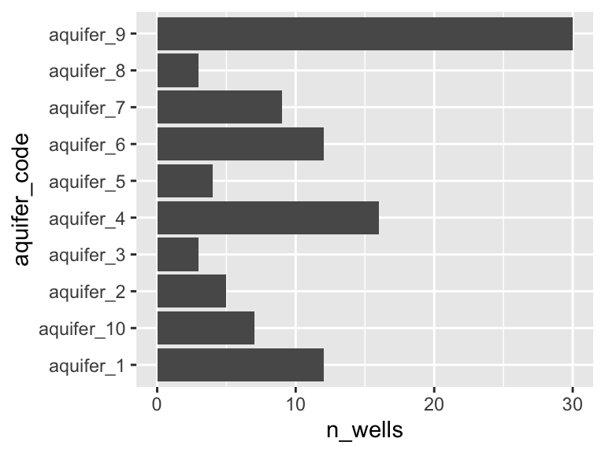

10 comparing means

“Are these two things the same?”
Often, we want to know if our study subjects contain different amounts of certain analytes. For example, “Does this lake over here contain more potassium than that lake over there?” For this, we need statistical tests. Here, we will have a look at comparing mean values for analyte abundance in situations with two samples and in situations with more than two samples.
I find many of the concepts discussed in this chapter easier to think about with an example in mind. For that, suppose that you are an analytical chemist on Hawaii that is studying the chemistry of the island’s aquifers. you have the data set hawaii_aquifers. You can see in the output below the structure of the data set - we have 990 measurements of a 9 different analytes in multiple wells that draw on a set of 10 aquifers.
hawaii_aquifers
## # A tibble: 990 × 6
## aquifer_code well_name longitude latitude analyte abundance
## <chr> <chr> <dbl> <dbl> <chr> <dbl>
## 1 aquifer_1 Alewa_Heights_Spring NA NA SiO2 11
## 2 aquifer_1 Alewa_Heights_Spring NA NA Cl 20
## 3 aquifer_1 Alewa_Heights_Spring NA NA Mg 7.6
## 4 aquifer_1 Alewa_Heights_Spring NA NA Na 14
## 5 aquifer_1 Alewa_Heights_Spring NA NA K 0.6
## 6 aquifer_1 Alewa_Heights_Spring NA NA SO4 7
## 7 aquifer_1 Alewa_Heights_Spring NA NA HCO3 51
## 8 aquifer_1 Alewa_Heights_Spring NA NA dissolved_s… 118
## 9 aquifer_1 Alewa_Heights_Spring NA NA Ca 6.3
## 10 aquifer_1 Beretania_High_Service NA NA SiO2 30
## # … with 980 more rows
unique(hawaii_aquifers$aquifer_code)
## [1] "aquifer_1" "aquifer_2" "aquifer_3" "aquifer_4" "aquifer_5"
## [6] "aquifer_6" "aquifer_7" "aquifer_8" "aquifer_9" "aquifer_10"Importantly, there are many wells that draw on each aquifer, as shown in the graph below.
hawaii_aquifers %>%
select(aquifer_code, well_name) %>%
group_by(aquifer_code) %>%
summarize(n_wells = length(unique(well_name))) -> aquifers_summarized
aquifers_summarized
## # A tibble: 10 × 2
## aquifer_code n_wells
## <chr> <int>
## 1 aquifer_1 12
## 2 aquifer_10 7
## 3 aquifer_2 5
## 4 aquifer_3 3
## 5 aquifer_4 16
## 6 aquifer_5 4
## 7 aquifer_6 12
## 8 aquifer_7 9
## 9 aquifer_8 3
## 10 aquifer_9 30
ggplot(aquifers_summarized) + geom_col(aes(x = n_wells, y = aquifer_code))
10.1 definitions
populations and independent measurements: When we are comparing means, we are comparing two sets of values. It is important to consider where these values came from in the first place. In particular, it is usually useful to think of these values as representatives of larger populations. In the example of our aquifer data set, we can think of the measurements from different wells drawing on the same aquifer as independent measurements of the “population” (i.e. the aquifer).
the null hypothesis: When we conduct a statistical test, we are testing the null hypothesis. The null (think “default”) hypothesis is that there is no difference bewteen the means (hence the name “null”). In the example of our aquifers, let’s say that we’re interested in whether two aquifers have different abundances of potassium - in this case the null hypothesis is that they do not differ, in other words, that they have the same amount of potassium.
the p value: The p value represents the probability of getting data as extreme as our results if the null hypothesis is true. In other words - the p value is the probability that we would observe the differences we did, if in fact there were no differences in the means at all. To continue with our example: suppose we measure potassium levels in 10% of the wells that access each aquifer and find that aquifer_1 has potassium levels of 14 +/- 2 and aquifer_2 has potassium levels of 12 +/- 1. Suppose that we then conduct a statistical test and get a p value of 0.04. This means that, assuming the aquifers have the same magneisum levels (i.e. assuming the null hypothesis is true), there is a 4% chance that we would get the measured values that we did. In other words, IF the aquifers have the same potassium abundance, it is pretty unlikely that we would have obtained the measurements that we did.
Please note that the the p value is not the probability of a detected difference being a false positive. The probability of a false positive requires additional information in order to be calculated. For further discussion please see the end of this chapter.
10.2 test selection
There are many different types of statistical tests. Below is a flow chart illustrating how it is recommended that statistical tests be used in this course. You can see that there are three regimes of tests: variance and normality tests (blue), parametric tests (green), and non-parametric tests (orange):

When we are comparing means, we need to first determine what kind of statistical tests we can use with our data. If (i) our data can be reasonably modelled by a normal distribution and (ii) the variances about the two means are similar, then we can use the more powerful “parametric” tests (i.e. tests that will be more likely to detect a difference in means, assuming one exists). If one of these criteria are not met, then we need to use less powerful “non-parametric” tests.
We can check our data for normality and similar variances using the Shapiro test and the Levene test. Let’s use the hawaii_aquifers data as an example, and let’s consider only the element potassium:
K_data <- hawaii_aquifers %>%
filter(analyte == "K")
K_data
## # A tibble: 110 × 6
## aquifer_code well_name longitude latitude analyte abundance
## <chr> <chr> <dbl> <dbl> <chr> <dbl>
## 1 aquifer_1 Alewa_Heights_Spring NA NA K 0.6
## 2 aquifer_1 Beretania_High_Service NA NA K 3.1
## 3 aquifer_1 Beretania_Low_Service NA NA K 3.6
## 4 aquifer_1 Kuliouou_Well -158. 21.3 K 3.9
## 5 aquifer_1 Manoa_Well_II -158. 21.3 K 0.6
## 6 aquifer_1 Moanalua_Wells_Pump_1 -158. 21.4 K 2.9
## 7 aquifer_1 Moanalua_Wells_Pump_2 -158. 21.4 K 2.8
## 8 aquifer_1 Moanalua_Wells_Pump_3 -158. 21.4 K 3.4
## 9 aquifer_1 Nuuanu_Aerator_Well -158. 21.4 K 0.4
## 10 aquifer_1 Palolo_Tunnel -158. 21.3 K 0.7
## # … with 100 more rowsTo work with two means, let’s just look at aquifers 1 and 6:
K_data_1_2 <- K_data %>%
filter(aquifer_code %in% c("aquifer_1", "aquifer_6"))
K_data_1_2
## # A tibble: 24 × 6
## aquifer_code well_name longitude latitude analyte abundance
## <chr> <chr> <dbl> <dbl> <chr> <dbl>
## 1 aquifer_1 Alewa_Heights_Spring NA NA K 0.6
## 2 aquifer_1 Beretania_High_Service NA NA K 3.1
## 3 aquifer_1 Beretania_Low_Service NA NA K 3.6
## 4 aquifer_1 Kuliouou_Well -158. 21.3 K 3.9
## 5 aquifer_1 Manoa_Well_II -158. 21.3 K 0.6
## 6 aquifer_1 Moanalua_Wells_Pump_1 -158. 21.4 K 2.9
## 7 aquifer_1 Moanalua_Wells_Pump_2 -158. 21.4 K 2.8
## 8 aquifer_1 Moanalua_Wells_Pump_3 -158. 21.4 K 3.4
## 9 aquifer_1 Nuuanu_Aerator_Well -158. 21.4 K 0.4
## 10 aquifer_1 Palolo_Tunnel -158. 21.3 K 0.7
## # … with 14 more rows
ggplot(K_data_1_2, aes(x = aquifer_code, y = abundance)) +
geom_boxplot() +
geom_point()
Are these data normally distributed? Do they have similar variance? Let’s get a first approximation by looking at a plot:
K_data_1_2 %>%
ggplot(aes(x = abundance)) +
geom_histogram(bins = 30) +
facet_wrap(~aquifer_code) +
geom_density(aes(y = ..density..*10), color = "blue")
Based on this graphic, it’s hard to say! Let’s use a statistical test to help. When we want to run the Shaprio test, we are looking to see if each group has normally distributed here (here group is “aquifer_code”, i.e. aquifer_1 and aquifer_6). This means we need to group_by(aquifer_code) before we run the test:
K_data_1_2 %>%
group_by(aquifer_code) %>%
shapiro_test(abundance)
## # A tibble: 2 × 4
## aquifer_code variable statistic p
## <chr> <chr> <dbl> <dbl>
## 1 aquifer_1 abundance 0.885 0.102
## 2 aquifer_6 abundance 0.914 0.239Both p-values are above 0.05! This means that the distributions are not significantly different from a normal distribution. What about the variances about the two means? Are they similar? For this we need a Levene test. With that test, we are not looking within each group, but rather across groups - this means we do NOT need to group_by(aquifer_code) and should specify a y ~ x formula instead:
K_data_1_2 %>%
levene_test(abundance ~ aquifer_code)
## # A tibble: 1 × 4
## df1 df2 statistic p
## <int> <int> <dbl> <dbl>
## 1 1 22 0.289 0.596The p-value from this test is 0.596! This means that their variances are not significantly different.
10.3 two means
Now, since our data passed both test, this means we can use a normal t-test. A t-test is a parametric test. This means that it relies on modelling the data using a normal distribution in order to make comparisons. It is also a powerful test. This means that it is likely to detect a difference in means, assuming one is present. Let’s try it out:
K_data_1_2 %>%
t_test(abundance ~ aquifer_code)
## # A tibble: 1 × 8
## .y. group1 group2 n1 n2 statistic df p
## * <chr> <chr> <chr> <int> <int> <dbl> <dbl> <dbl>
## 1 abundance aquifer_1 aquifer_6 12 12 -2.75 20.5 0.0121A p-value of 0.012! This is below 0.05, meaning that there is a 95% chance that the two means are different. Suppose that our data had not passed the Shapiro and/or Levene tests. We would then need to use a Wilcox test. The Wilcox test is a non-parametric test, which means that it does not use a normal distribution to model the data in order to make comparisons. This means that is a less powerful test than the t-test, which means that it is less likely to detect a difference in the means, assuming there is one. For fun, let’s try that one out and compare the p-values from the two methods:
K_data_1_2 %>%
wilcox_test(abundance ~ aquifer_code)
## # A tibble: 1 × 7
## .y. group1 group2 n1 n2 statistic p
## * <chr> <chr> <chr> <int> <int> <dbl> <dbl>
## 1 abundance aquifer_1 aquifer_6 12 12 33.5 0.0282A p-value of 0.028! This is higher than the value given by the t-test (0.012). That is because the Wilcox test is a less powerful test: it is less likely to detect differences in means, assuming they exist.
10.4 more than two means
In the previous section we compared two means. What if we want to compare means from more than two study subjects? The first step is again to determine which tests to use. Let’s consider our hawaii aquifer data again, though this time let’s use all the aquifers, not just two:
K_data <- hawaii_aquifers %>%
filter(analyte == "K")
K_data
## # A tibble: 110 × 6
## aquifer_code well_name longitude latitude analyte abundance
## <chr> <chr> <dbl> <dbl> <chr> <dbl>
## 1 aquifer_1 Alewa_Heights_Spring NA NA K 0.6
## 2 aquifer_1 Beretania_High_Service NA NA K 3.1
## 3 aquifer_1 Beretania_Low_Service NA NA K 3.6
## 4 aquifer_1 Kuliouou_Well -158. 21.3 K 3.9
## 5 aquifer_1 Manoa_Well_II -158. 21.3 K 0.6
## 6 aquifer_1 Moanalua_Wells_Pump_1 -158. 21.4 K 2.9
## 7 aquifer_1 Moanalua_Wells_Pump_2 -158. 21.4 K 2.8
## 8 aquifer_1 Moanalua_Wells_Pump_3 -158. 21.4 K 3.4
## 9 aquifer_1 Nuuanu_Aerator_Well -158. 21.4 K 0.4
## 10 aquifer_1 Palolo_Tunnel -158. 21.3 K 0.7
## # … with 100 more rows
ggplot(data = K_data, aes(y = aquifer_code, x = abundance)) +
geom_boxplot() +
geom_point(color = "maroon", alpha = 0.6, size = 3)
Let’s check visually to see if each group is normally distributed and to see if they have roughly equal variance:
K_data %>%
group_by(aquifer_code) %>%
ggplot(aes(x = abundance)) +
geom_histogram(bins = 30) +
facet_wrap(~aquifer_code) +
geom_density(aes(y = ..density..*10), colour = "blue")
Again, it is somewhat hard to tell visually if these data are normally distributed. It seems pretty likely that they have different variances about the means, but let’s check using the Shapiro and Levene tests. Don’t forget: with the Shaprio test, we are looking within each group and so need to group_by(), with the Levene test, we are looking across groups, and so need to provide a y~x formula:
K_data %>%
group_by(aquifer_code) %>%
shapiro_test(abundance)
## # A tibble: 10 × 4
## aquifer_code variable statistic p
## <chr> <chr> <dbl> <dbl>
## 1 aquifer_1 abundance 0.885 0.102
## 2 aquifer_10 abundance 0.864 0.163
## 3 aquifer_2 abundance 0.913 0.459
## 4 aquifer_3 abundance 0.893 0.363
## 5 aquifer_4 abundance 0.948 0.421
## 6 aquifer_5 abundance 0.902 0.421
## 7 aquifer_6 abundance 0.914 0.239
## 8 aquifer_7 abundance 0.915 0.355
## 9 aquifer_8 abundance 0.842 0.220
## 10 aquifer_9 abundance 0.786 0.00000866K_data %>%
levene_test(abundance ~ aquifer_code)
## # A tibble: 1 × 4
## df1 df2 statistic p
## <int> <int> <dbl> <dbl>
## 1 9 100 3.12 0.00239Based on these tests, it looks like the data for aquifer 9 is significantly different from a normal distribution (Shaprio test p = 0.000008), and the variances are certainly different from one another (Levene test p = 0.002).
Let’s assume for a second that our data passed these tests. This means that we could reasonably model our data with normal distributions and use a parametric test to compare means. This means that we can use an ANOVA to test for differences in means.
10.4.1 ANOVA, Tukey tests
We will use the anova_test function from the package rstatix. It will tell us if any of the means in the data are statistically different from one another. However, if there are differences between the means, it will not tell us which of them are different.
K_data %>%
anova_test(abundance ~ aquifer_code)
## Coefficient covariances computed by hccm()
## ANOVA Table (type II tests)
##
## Effect DFn DFd F p p<.05 ges
## 1 aquifer_code 9 100 10.021 7.72e-11 * 0.474A p-value of 7.7e-11! There are definitely some significant differences among this group. But, WHICH are different from one another though? For this, we need to run Tukey’s Honest Significant Difference test (implemented using tukey_hsd). This will essentially run t-test on all the pairs of study subjects that we can derive from our data set (in this example, aquifer_1 vs. aquifer_2, aquifer_1 vs. aquifer_3, etc.). After that, it will correct the p-values according to the number of comparisons that it performed. This controls the rate of type I error that we can expect from the test. These corrected values are provided to us in the p.adj column.
K_data %>%
tukey_hsd(abundance ~ aquifer_code)
## # A tibble: 45 × 9
## term group1 group2 null.value estimate conf.low conf.high p.adj
## * <chr> <chr> <chr> <dbl> <dbl> <dbl> <dbl> <dbl>
## 1 aquifer_code aquifer_1 aquif… 0 0.00357 -2.00 2.01 1 e+0
## 2 aquifer_code aquifer_1 aquif… 0 1.44 -0.668 3.55 4.56e-1
## 3 aquifer_code aquifer_1 aquif… 0 0.375 -2.35 3.10 1 e+0
## 4 aquifer_code aquifer_1 aquif… 0 -1.15 -2.75 0.437 3.68e-1
## 5 aquifer_code aquifer_1 aquif… 0 -0.845 -3.09 1.40 9.68e-1
## 6 aquifer_code aquifer_1 aquif… 0 1.98 0.261 3.71 1.15e-2
## 7 aquifer_code aquifer_1 aquif… 0 2.70 0.837 4.56 3.56e-4
## 8 aquifer_code aquifer_1 aquif… 0 -0.125 -2.85 2.60 1 e+0
## 9 aquifer_code aquifer_1 aquif… 0 -0.378 -1.78 1.03 9.97e-1
## 10 aquifer_code aquifer_10 aquif… 0 1.44 -0.910 3.79 6.13e-1
## # … with 35 more rows, and 1 more variable: p.adj.signif <chr>Using the output from our tukey test, we can determine which means are similar. We can do this using the p_groups function:
groups_based_on_tukey <- K_data %>%
tukey_hsd(abundance ~ aquifer_code) %>%
p_groups()
groups_based_on_tukey
## treatment group spaced_group
## aquifer_1 aquifer_1 ab ab
## aquifer_10 aquifer_10 abc abc
## aquifer_2 aquifer_2 acd a cd
## aquifer_3 aquifer_3 abcd abcd
## aquifer_4 aquifer_4 b b
## aquifer_5 aquifer_5 ab ab
## aquifer_6 aquifer_6 cd cd
## aquifer_7 aquifer_7 d d
## aquifer_8 aquifer_8 abc abc
## aquifer_9 aquifer_9 ab abWe can use the output from p_groups to annotate our plot:
ggplot(data = K_data, aes(y = aquifer_code, x = abundance)) +
geom_boxplot() +
geom_point(color = "maroon", alpha = 0.6, size = 3) +
geom_text(data = groups_based_on_tukey, aes(y = treatment, x = 9, label = group))
Excellent! This plot shows us, using the letters on the same line with each aquifer, which means are the same and which are different. If a letter is shared among the labels in line with two aquifers, it means that their means do not differ significantly. For example, aquifer 2 and aquifer 6 both have “b” in their labels, so their means are not different - and are the same as those of aquifers 3 and 10.
10.4.2 Kruskal, Dunn tests
The above ANOVA example is great, but remember - our data did not pass the Shapiro or Levene tests. This means not all our data can be modelled by a normal distribution and taht we need to use a non-parametric test. The non-parametric alternative to the ANOVA is called the Kruskal test. Like the Wilcox test, it is less powerful that its parametric relative, meaning that it is less likely to detected differences, should they exist. However, since our data do not pass the Shapiro/Levene tests, we have to resort to the Kruskal test. Let’s try it out:
K_data %>%
kruskal_test(abundance ~ aquifer_code)
## # A tibble: 1 × 6
## .y. n statistic df p method
## * <chr> <int> <dbl> <int> <dbl> <chr>
## 1 abundance 110 57.7 9 0.0000000037 Kruskal-WallisA p-value of 3.9e-9! This is higher than the p-value from running ANOVA on the same data (remember, the Kruskal test is less powerful). Never the less, the value is still well below 0.05, meaning that some of the means are different. So, how do we determine WHICH are different from one another? When we ran ANOVA the follow-up test (the post hoc test) was Tukey’s HSD. After the Kruskal test, the post hoc test we use is the Dunn test. Let’s try:
K_data %>%
dunn_test(abundance ~ aquifer_code)
## # A tibble: 45 × 9
## .y. group1 group2 n1 n2 statistic p p.adj p.adj.signif
## * <chr> <chr> <chr> <int> <int> <dbl> <dbl> <dbl> <chr>
## 1 abundance aquifer_1 aquifer_10 12 7 -0.205 0.838 1 ns
## 2 abundance aquifer_1 aquifer_2 12 6 2.25 0.0242 0.702 ns
## 3 abundance aquifer_1 aquifer_3 12 3 0.911 0.362 1 ns
## 4 abundance aquifer_1 aquifer_4 12 17 -2.70 0.00702 0.232 ns
## 5 abundance aquifer_1 aquifer_5 12 5 -1.15 0.252 1 ns
## 6 abundance aquifer_1 aquifer_6 12 12 2.53 0.0113 0.351 ns
## 7 abundance aquifer_1 aquifer_7 12 9 3.02 0.00254 0.0967 ns
## 8 abundance aquifer_1 aquifer_8 12 3 0.182 0.855 1 ns
## 9 abundance aquifer_1 aquifer_9 12 36 -0.518 0.605 1 ns
## 10 abundance aquifer_10 aquifer_2 7 6 2.20 0.0278 0.777 ns
## # … with 35 more rowsThis gives us adjusted p-values for all pairwise comparisons. Once again, we can use p_groups() to give us a compact letter display for each group, which can then be used to annotate the plot:
groups_based_on_dunn <- K_data %>%
dunn_test(abundance ~ aquifer_code) %>%
p_groups()
groups_based_on_dunn
## treatment group spaced_group
## aquifer_1 aquifer_1 abcd abcd
## aquifer_10 aquifer_10 abcd abcd
## aquifer_2 aquifer_2 abc abc
## aquifer_3 aquifer_3 abcd abcd
## aquifer_4 aquifer_4 d d
## aquifer_5 aquifer_5 acd a cd
## aquifer_6 aquifer_6 ab ab
## aquifer_7 aquifer_7 b b
## aquifer_8 aquifer_8 abcd abcd
## aquifer_9 aquifer_9 cd cd
ggplot(data = K_data, aes(y = aquifer_code, x = abundance)) +
geom_boxplot() +
geom_point(color = "black", alpha = 0.4, size = 2) +
scale_x_continuous(name = "Potassium abundance", breaks = seq(0,10,1)) +
scale_y_discrete(name = "Aquifer code") +
geom_text(data = groups_based_on_dunn, aes(y = treatment, x = 9, label = group)) +
theme_bw()
Note that these groupings are different from those generated by ANOVA/Tukey.
10.5 pairs of means
Oftentimes we have more than two means to compare, but rather than wanting to compare all means at once, we want to compare them in a pairwise fashion. For example, suppose we want to know if any of the aquifers contain different amounts of Na and Cl. We are not interested in testing for differences among all values of Na and Cl, rather, we want to test all pairs of Na and Cl values arising from each aquifer. That is to say, we want to compare the means in each facet of the plot below:
hawaii_aquifers %>%
filter(analyte %in% c("Na", "Cl")) %>%
ggplot(aes(x = analyte, y = abundance)) + geom_violin() + geom_point() + facet_grid(.~aquifer_code)
Fortunately, we can use an approach that is very similar to the what we’ve learned in the earlier portions of this chapter, just with minor modifications. Let’s have a look! We start with the Shapiro and Levene tests, as usual (note that we group using two variables when using the Shapiro test so that each analyte within each aquifer is considered as an individual distribution):
hawaii_aquifers %>%
filter(analyte %in% c("Na", "Cl")) %>%
group_by(analyte, aquifer_code) %>%
shapiro_test(abundance)
## # A tibble: 20 × 5
## aquifer_code analyte variable statistic p
## <chr> <chr> <chr> <dbl> <dbl>
## 1 aquifer_1 Cl abundance 0.900 1.59e- 1
## 2 aquifer_10 Cl abundance 0.486 1.09e- 5
## 3 aquifer_2 Cl abundance 0.869 2.24e- 1
## 4 aquifer_3 Cl abundance 0.75 0
## 5 aquifer_4 Cl abundance 0.903 7.49e- 2
## 6 aquifer_5 Cl abundance 0.767 4.22e- 2
## 7 aquifer_6 Cl abundance 0.741 2.15e- 3
## 8 aquifer_7 Cl abundance 0.893 2.12e- 1
## 9 aquifer_8 Cl abundance 0.878 3.17e- 1
## 10 aquifer_9 Cl abundance 0.414 7.58e-11
## 11 aquifer_1 Na abundance 0.886 1.06e- 1
## 12 aquifer_10 Na abundance 0.593 2.26e- 4
## 13 aquifer_2 Na abundance 0.884 2.88e- 1
## 14 aquifer_3 Na abundance 0.822 1.69e- 1
## 15 aquifer_4 Na abundance 0.933 2.41e- 1
## 16 aquifer_5 Na abundance 0.782 5.71e- 2
## 17 aquifer_6 Na abundance 0.764 3.80e- 3
## 18 aquifer_7 Na abundance 0.915 3.51e- 1
## 19 aquifer_8 Na abundance 0.855 2.53e- 1
## 20 aquifer_9 Na abundance 0.544 2.09e- 9Looks like some of those distributions are significantly different from normal! Let’s run the levene test anyway. Note that for this particular case of the Levene test, we are interested in testing whether each pair of distributions has similar variances. For that we need to feed the Levene test data that is grouped by aquifer_code (so that it tests each pair as a group), then we need to specify the y ~ x formula (which in this case is abundance ~ analyte):
hawaii_aquifers %>%
filter(analyte %in% c("Na", "Cl")) %>%
group_by(aquifer_code) %>%
levene_test(abundance ~ analyte)
## # A tibble: 10 × 5
## aquifer_code df1 df2 statistic p
## <chr> <int> <int> <dbl> <dbl>
## 1 aquifer_1 1 22 10.5 0.00375
## 2 aquifer_10 1 12 0.0535 0.821
## 3 aquifer_2 1 10 0.0243 0.879
## 4 aquifer_3 1 4 0.320 0.602
## 5 aquifer_4 1 32 1.57 0.219
## 6 aquifer_5 1 8 0.474 0.511
## 7 aquifer_6 1 22 1.03 0.322
## 8 aquifer_7 1 16 1.54 0.232
## 9 aquifer_8 1 4 0.515 0.512
## 10 aquifer_9 1 70 1.07 0.304It looks like the variances of the pair in aquifer 1 have significantly different variances. So - we for sure need to be using non-parametric testing. If this were a simple case of two means we would use the wilcox_test, but we have may pairs, so we will use pairwise_wilcox_test (note that with this test there are options for various styles of controlling for multiple comparisons, see: ?pairwise_wilcox_test):
hawaii_aquifers %>%
filter(analyte %in% c("Na", "Cl")) %>%
group_by(aquifer_code) %>%
pairwise_wilcox_test(abundance~analyte)
## # A tibble: 10 × 10
## aquifer_code .y. group1 group2 n1 n2 statistic p p.adj
## * <chr> <chr> <chr> <chr> <int> <int> <dbl> <dbl> <dbl>
## 1 aquifer_1 abundance Cl Na 12 12 99.5 0.119 1.19e-1
## 2 aquifer_10 abundance Cl Na 7 7 14 0.198 1.98e-1
## 3 aquifer_2 abundance Cl Na 6 6 36 0.005 5 e-3
## 4 aquifer_3 abundance Cl Na 3 3 3 0.658 6.58e-1
## 5 aquifer_4 abundance Cl Na 17 17 189 0.129 1.29e-1
## 6 aquifer_5 abundance Cl Na 5 5 17.5 0.329 3.29e-1
## 7 aquifer_6 abundance Cl Na 12 12 53 0.285 2.85e-1
## 8 aquifer_7 abundance Cl Na 9 9 42 0.929 9.29e-1
## 9 aquifer_8 abundance Cl Na 3 3 6 0.7 7 e-1
## 10 aquifer_9 abundance Cl Na 36 36 248. 0.00000554 5.54e-6
## # … with 1 more variable: p.adj.signif <chr>Excellent! It looks like there is a statistically significant difference between the means of the abundances of Cl and Na in aquifer_2 and (surprisingly?) in aquifer_9 (perhaps due to the large number of observations?).
What would we have done if our Shaprio and Levene tests had revealed no significant differences? Well, a pairwise_t_test of course!
hawaii_aquifers %>%
filter(analyte %in% c("Na", "Cl")) %>%
group_by(aquifer_code) %>%
pairwise_t_test(abundance~analyte)
## # A tibble: 10 × 10
## aquifer_code .y. group1 group2 n1 n2 p p.signif p.adj
## * <chr> <chr> <chr> <chr> <int> <int> <dbl> <chr> <dbl>
## 1 aquifer_1 abundance Cl Na 12 12 0.0469 * 0.0469
## 2 aquifer_10 abundance Cl Na 7 7 0.882 ns 0.882
## 3 aquifer_2 abundance Cl Na 6 6 0.0000375 **** 0.0000375
## 4 aquifer_3 abundance Cl Na 3 3 0.683 ns 0.683
## 5 aquifer_4 abundance Cl Na 17 17 0.103 ns 0.103
## 6 aquifer_5 abundance Cl Na 5 5 0.145 ns 0.145
## 7 aquifer_6 abundance Cl Na 12 12 0.566 ns 0.566
## 8 aquifer_7 abundance Cl Na 9 9 0.521 ns 0.521
## 9 aquifer_8 abundance Cl Na 3 3 0.428 ns 0.428
## 10 aquifer_9 abundance Cl Na 36 36 0.948 ns 0.948
## # … with 1 more variable: p.adj.signif <chr>Excellent, now we see how to run parametric and non-parametric pairwise comparisons.
10.6 further reading
For more on comparing multiple means in R: www.datanovia.com
For more on parametric versus non-parametric tests: Statistics by Jim
For more on interpreting p values: [The p value wars (again) by Ulrich Dirnagl]
10.7 exercises
Using the hawaii_aquifers data set, please complete the following:
Choose one analyte and filter the data so only the rows for that analyte are shown.
Choose two of the aquifers. Are the mean abundances for your chosen analyte different in these two aquifers? Don’t forget to test your data for normality and homogeneity of variance before selecting a statistical test. Use a plot to illustrate whether the means are similar or different.
Choose a second analyte, different from the first one you chose. Considering all the aquifers in the dataset, do any of them have the same abundance of this analyte? Again, don’t forget about normality and homogeneity of variance tests. Use a plot to illustrate your answer.
Repeat #3 above, but switch the type of test used (i.e. use non-parametric if you used parametric for #3 and vice-versa). Compare the p values and p groups obtained by the two methods. Use a graphic to illustrate this. Why are they different?